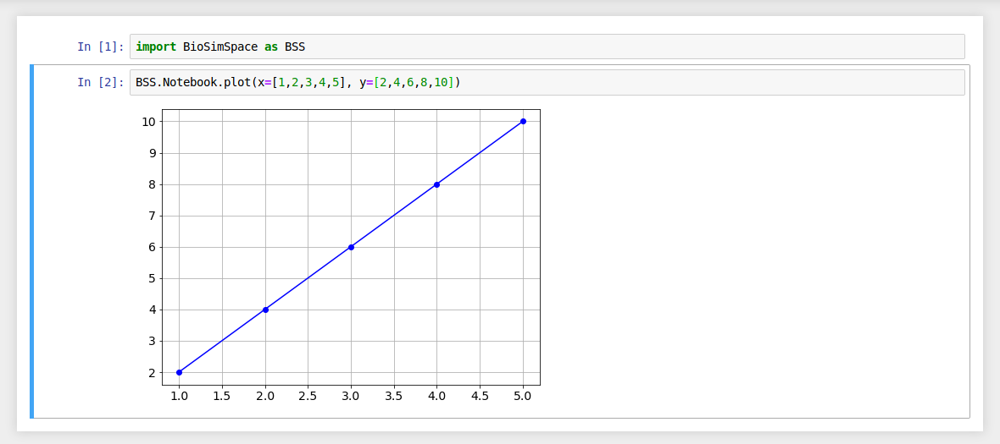
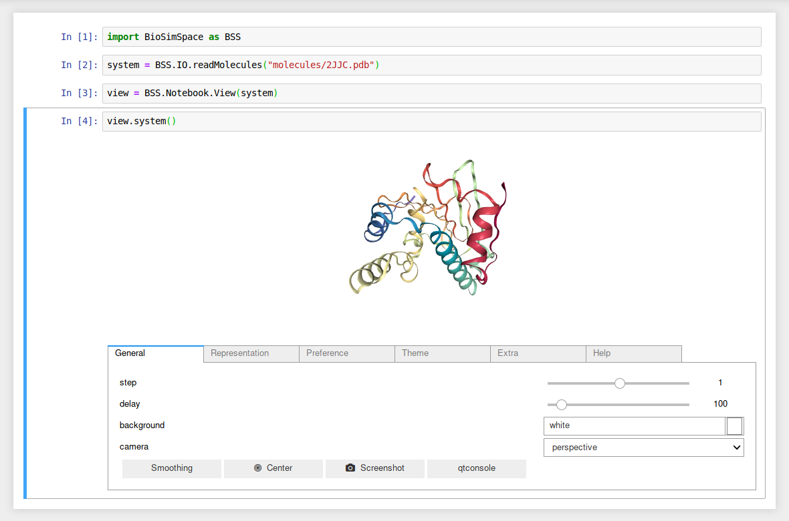

BioSimSpace.Notebook¶
The Notebook package contains tools that are used when BioSimSpace is run interactively, e.g. within a Jupyter notebook.
Functions¶
|
A simple function to create x/y plots with matplotlib. |
|
A simple function to create two-dimensional contour plots with matplotlib. |
|
Plot the overlap matrix from a free-energy perturbation analysis. |
Examples
Generate a line graph using two lists of data.
{kind=link}
If no argument is passed for the x data then each y data value is
plotted against its list index.
{kind=link}
Use the xlabel and ylabel arguments to add labels to your plots.
{kind=link}
Error bars can be added using xerror and yerror.
{kind=link}
It is possible to generate plots from the output of a real-time simulation.
Where functions return time-series data containing BioSimSpace.Types, then
axis labels will be automatically generated. (The xlabel and ylabel
still take precedence.)
{kind=link}
Classes¶
|
A class for handling interactive molecular visualisations. |
Examples
Load and visualise a molecular system.
{kind=link}
Attach a View to a running molecular
dynamics Process and visualise the first molecule in
the system from the latest configuration in real-time.
{kind=link}